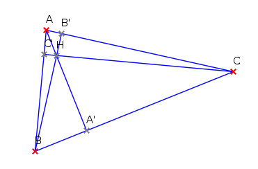
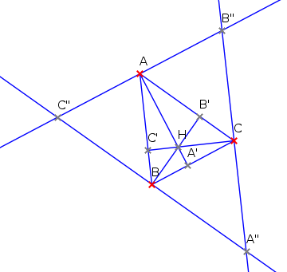

| Choisissez votre langue ! | Choose your language ! |
Dans un triangle ABC on appelle
'hauteur issue de A'
la perpendiculaire à (BC) passant par A.
Montrer que dans tout triangle les trois hauteurs sont concourantes en un point H appelé
'orthocentre'
du triangle.

aide
Tracer successivement :
- la parallèle à (BC) passant par A
- la parallèle à (AC) passant par B
- la parallèle à (AB) passant par C
Montrer que les hauteurs de ABC sont les médiatrices de A"B"C" et utiliser .

solution
Par construction ACA"B est un .
Donc BA"=BC".
ACBC" est également un parallélogramme, donc BA"=BC".
B est donc le milieu de A"C".
Pour les mêmes raisons C est le milieu de B"A" et A le milieu de B"C".
In a triangle ABC, we call
'altitude from A'
the perpendicular to (BC) passing through A.
Show that in any triangle the three altitudes are concurrent at a point H called
'orthocenter'
of the triangle.
hint
Draw successively:
- the parallel to (BC) passing through A
- the parallel to (AC) passing through B
- the parallel to (AB) passing through C
Show that the altitudes of ABC are the perpendicular bisectors of A"B"C" and use .
solution
By construction ACA"B is a .
So BA"=BC".
ACBC" is also a parallelogram, so BA"=BC".
B is therefore the midpoint of A"C".
For the same reasons C is the midpoint of B"A" and A the midpoint of B"C".
|
Création Gilles Dubois - licence CC-BY-SA
Created by Gilles Dubois - licence CC-BY-SA
|
Septembre 2023
September 2023
|
Version mobile Jquery
Mobile Jquery version
|
|